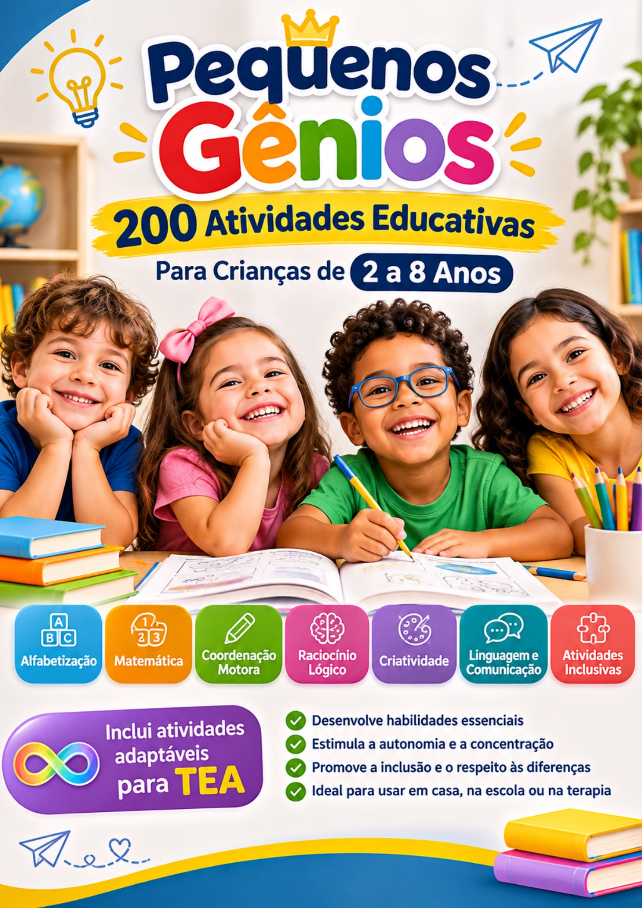
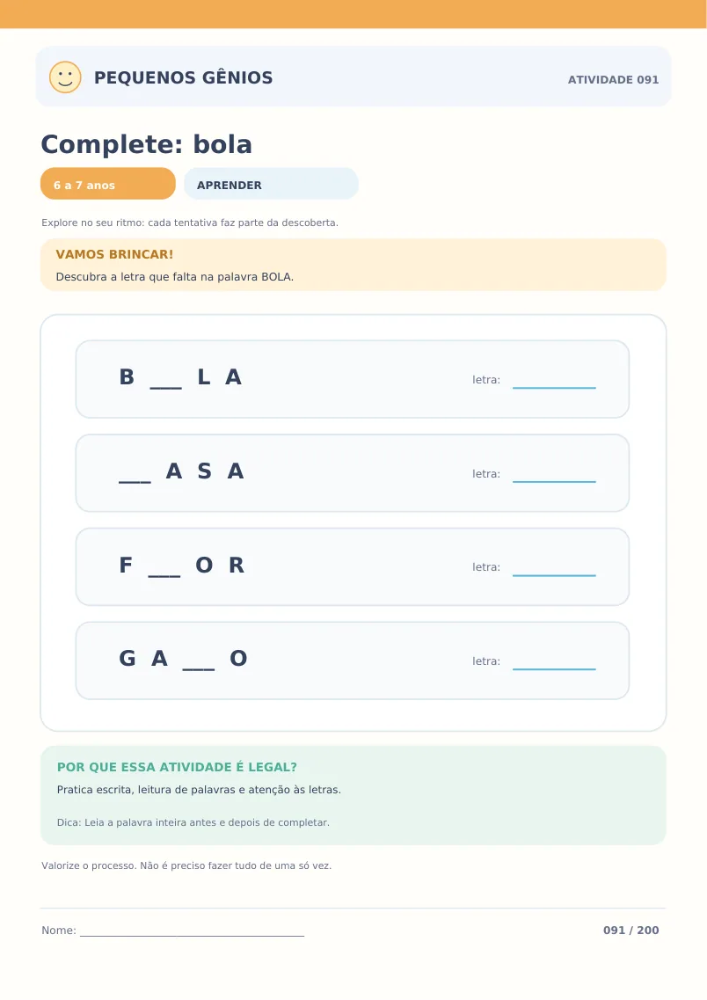
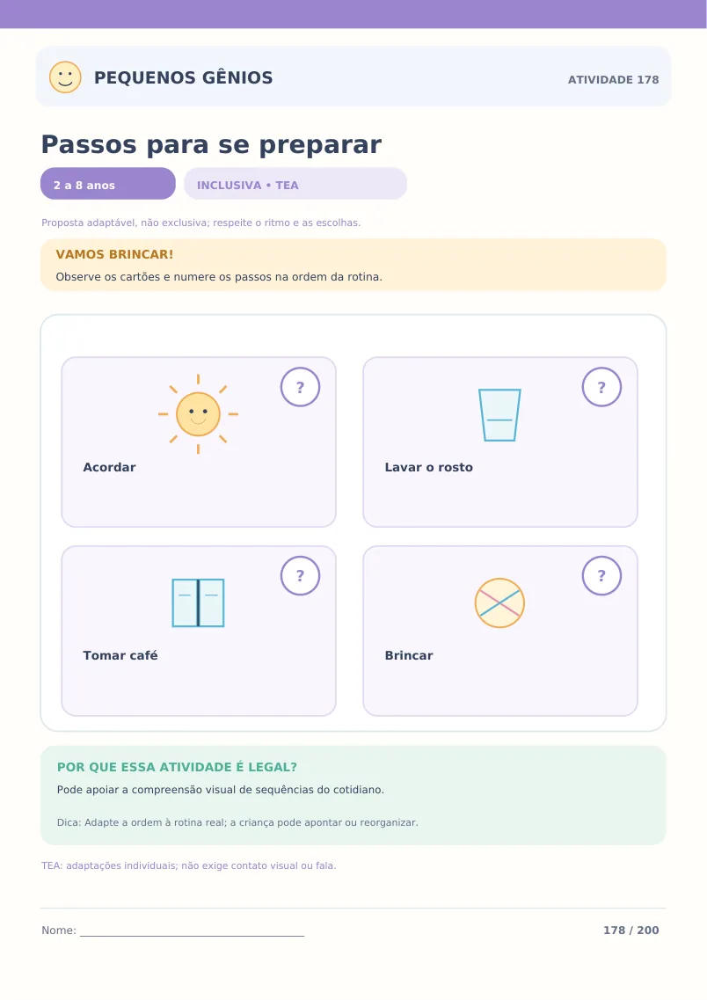
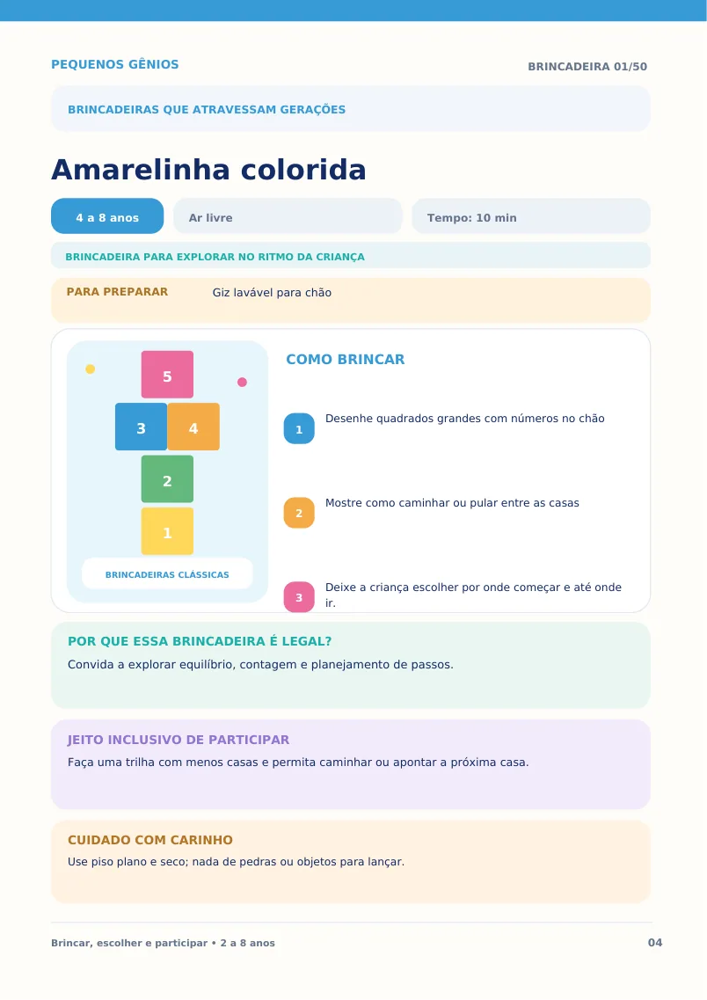
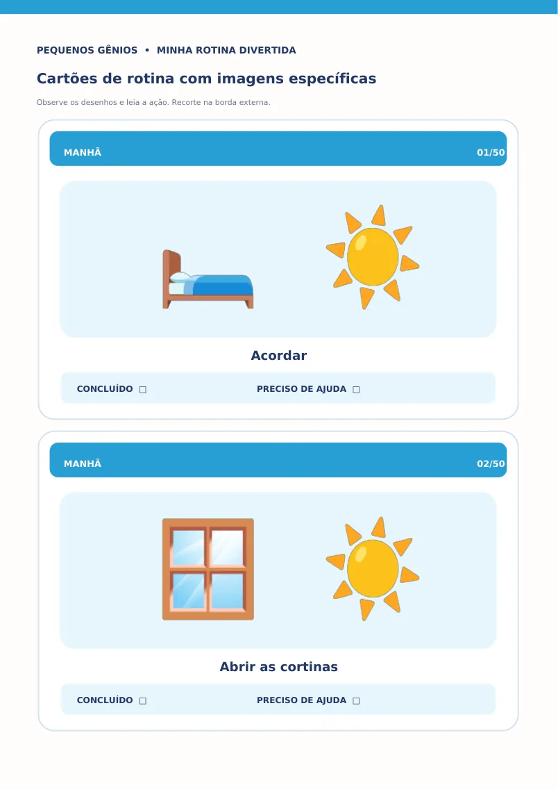
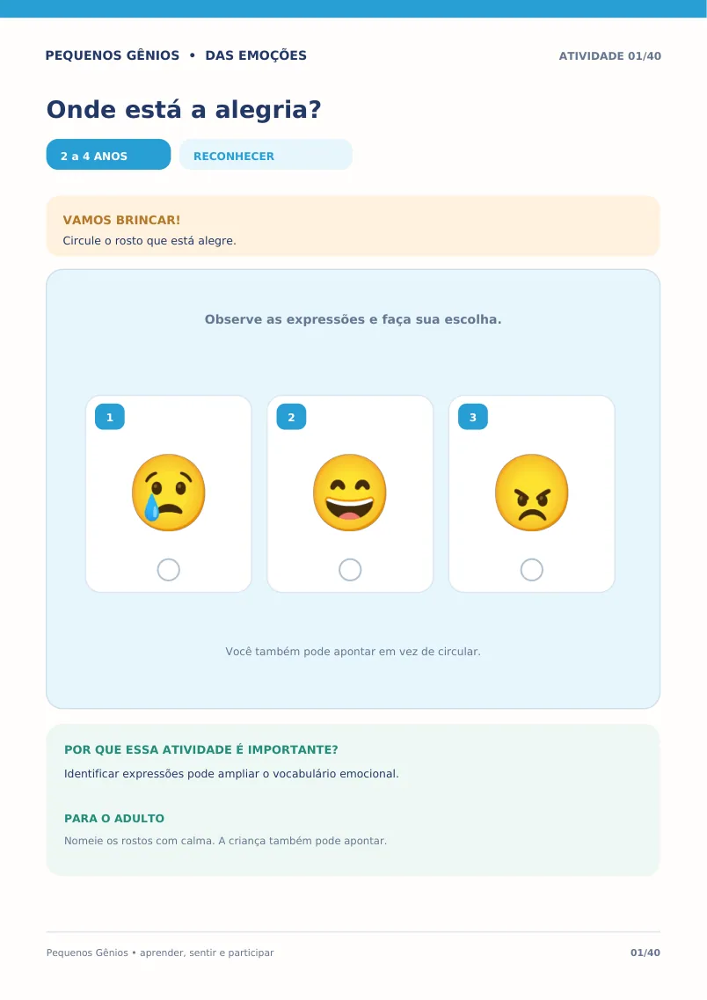

2 a 3 anos
2 a 3 anosPasseio da borboletaTraçados e coordenação
Tenha 200 atividades educativas organizadas por idade e habilidade, para crianças de 2 a 8 anos. Para usar em casa, na escola ou como apoio complementar em atendimentos, incluindo propostas adaptáveis para TEA.
✓ Pagamento seguro pela Kiwify · Acesso digital após confirmação · Imprima quando quiser


Aqui na escola eu sempre criava atividades mas confesso que a criatividade vai e vem, nossa agora com o arsenal do Pequenos Gênios ficou extremamente mais fácil!
Beatriz · ProfessoraInclui propostas adaptáveis para crianças com TEA e outros perfis neurodivergentes, respeitando diferentes formas de participação e comunicação.
Três páginas do kit principal e uma de cada material complementar. Veja, amplie e baixe as seis amostras gratuitamente.
2 a 3 anos
6 a 7 anos
Inclusiva • TEA
Material complementar
Material complementar
Material complementarAs três últimas amostras pertencem aos materiais complementares, vendidos separadamente como adicionais opcionais no checkout. O kit principal de R$ 19,90 contém as 200 atividades.
200 propostas para escolher, imprimir e adaptar em diferentes contextos de aprendizagem.
Atividades para brincar e aprender juntos em casa.
Ideias imprimíveis para complementar o planejamento pedagógico.
Recursos complementares adaptáveis aos objetivos de cada atendimento.
Propostas para diferentes idades, habilidades e ritmos de aprendizagem.
Atividades de percepção, comunicação, rotina e participação.
O material inclui atividades inclusivas e adaptáveis, com apoios visuais, oportunidades de escolha e diferentes formas de comunicação. São propostas que podem ser selecionadas conforme as habilidades, preferências e necessidades de cada criança — sem promessas terapêuticas ou indicação universal.
Entenda como funciona a seção inclusiva ↗Você não precisa inventar uma atividade nova a cada dia. Escolha uma página, imprima e acompanhe a criança no próprio ritmo.
Letras, sons, palavras e primeiras leituras.
Quantidades, sequências e operações iniciais.
Traçados, caminhos e movimentos com o lápis.
Pares, padrões, observação e comparação.
Desenhos, histórias e espaço para imaginar.
Escolhas, apoio visual e participação.
O conteúdo está organizado por faixas etárias orientativas. Você escolhe de acordo com os interesses, o momento e as habilidades da criança — sem pressa ou cobranças.
Espiar as páginas reaisFormas, traços, observação e escolhas.
Contagem, reconhecimento e padrões.
Escrita, leitura e matemática inicial.
Interpretação, lógica e criação.
Propostas adaptáveis de 2 a 8 anos.
O kit conta com uma seção de atividades inclusivas e adaptáveis, incluindo propostas que podem apoiar crianças com TEA (Transtorno do Espectro Autista) e outros perfis neurodivergentes, com propostas de escolhas, organização de rotina, percepção visual e comunicação.
As atividades são sugestões complementares, não exclusivas e não representam tratamento ou validação clínica individual. Não substituem avaliação ou acompanhamento profissional.

Experiências compartilhadas por quem já utiliza nossos materiais.
Meu filho amou a metodologia das emoções, ele é TEA nível 2 não verbal, mas agora isso facilitou demais nossa comunicação.
Aqui na escola eu sempre criava atividades mas confesso que a criatividade vai e vem, nossa agora com o arsenal do Pequenos Gênios ficou extremamente mais fácil!
Gente, minhas crianças são difíceis, tá? Super cheias de energia. É difícil elas conseguirem parar e se acalmar. Esses dias fiz com elas a atividade da observação das nuvens em um jardim. Eu fiquei impressionada como elas amaram e curtiram o momento com a natureza.
Aqui na escola uma das professoras me apresentou o Pequenos Gênios. Eu primeiro fui a fundo verificar quais as fontes e realmente era tudo muito alinhado. Implementei aqui com nossas crianças. O resultado? Os pais vieram nos questionar o que estávamos fazendo de diferente, porque a comunicação e a aceitação das crianças com coisas simples melhorou da água pro vinho.
Gente do céu, a Rotina Divertida parece que foi criada pro meu Miguel! Era uma bagunça aqui em casa todo dia porque não tínhamos um fluxo. Agora ele aceitou tanto que já tá decorando passo a passo do que preciso que ele faça desde que acorda!
O material apresenta referências conhecidas sobre brincadeira, aprendizagem, desenvolvimento infantil e comunicação alternativa. Elas ajudam a orientar princípios gerais — não significam certificação ou validação individual das 200 atividades.
Edição indicada para uso em 2026 e 2027, com escolha de atividades por interesse e habilidade.
Preço promocional anunciado por tempo limitado. Produto digital; não há envio físico. O acesso ao material é disponibilizado pela Kiwify após a confirmação do pagamento.
Você recebe acesso digital ao kit Pequenos Gênios com 200 atividades educativas em PDF, organizadas por faixas etárias, além de capa, apresentação e sumário. Após a confirmação do pagamento, as instruções de acesso são disponibilizadas pela Kiwify no e-mail cadastrado na compra.
É totalmente digital. Você pode salvar o PDF e imprimir as páginas que desejar, conforme seu uso permitido.
As atividades são organizadas por faixas etárias orientativas. O adulto deve escolher as propostas de acordo com o interesse, as habilidades e as necessidades de cada criança.
Sim, o PDF contém uma seção com sugestões inclusivas e adaptáveis de comunicação, rotina e percepção, que podem ser utilizadas de forma individualizada. Não é um tratamento terapêutico nem substitui acompanhamento profissional.
Não há certificação clínica específica para cada atividade. A identificação 2026/2027 indica a edição de uso, e as fontes citadas sustentam princípios pedagógicos gerais — não uma homologação oficial do kit.
Sim! Veja seis páginas reais e baixe a amostra gratuita: três do kit principal e três de materiais complementares opcionais.